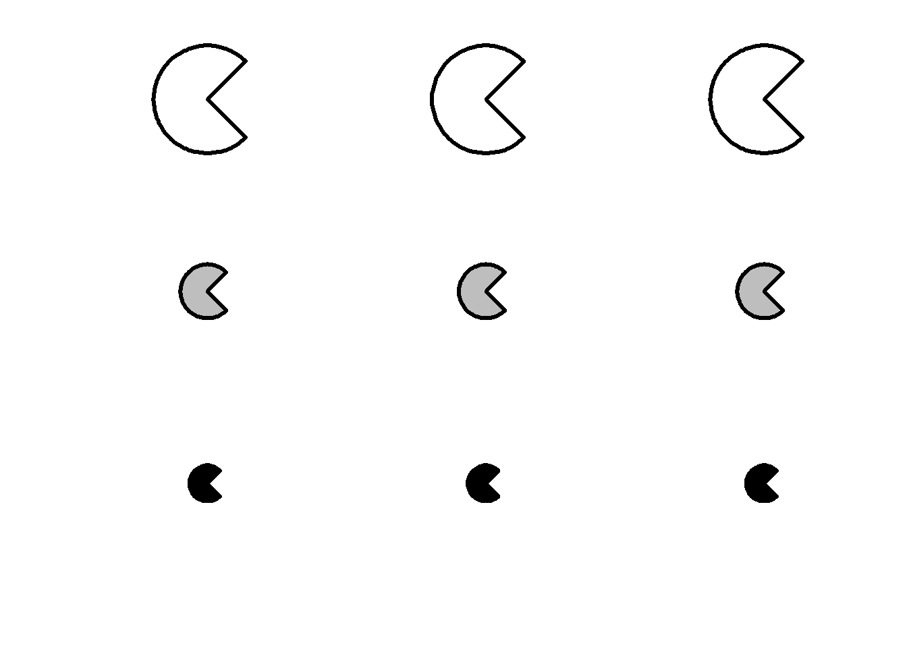
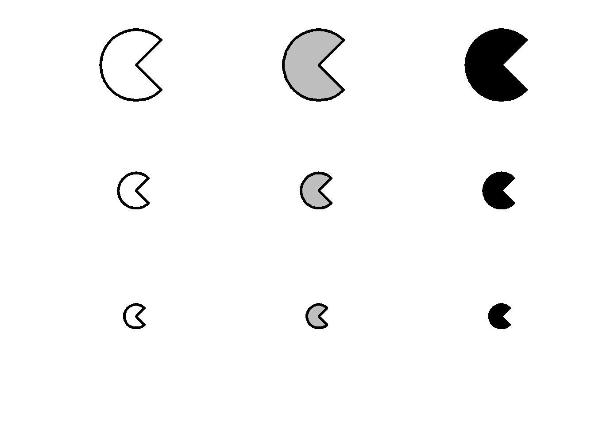
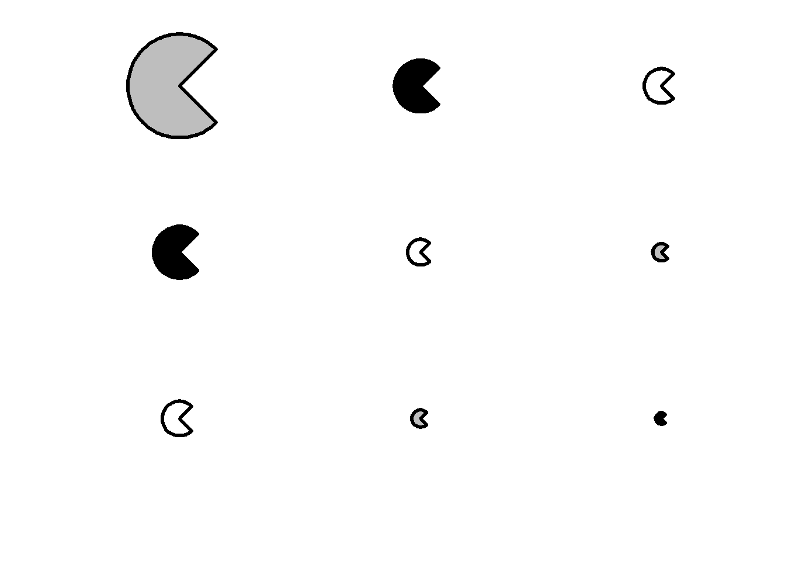

DistrattoriRegole
Ragionando, sia le regole che le logiche vanno ad influenzare la scelta dei distrattori.
In questo file, cerco di trovare delle regole che possano tenere insieme in modo logico le regole e i distrattori.
logiche, 1 regola
logiche, 2 regole




Logiche, 3 regole